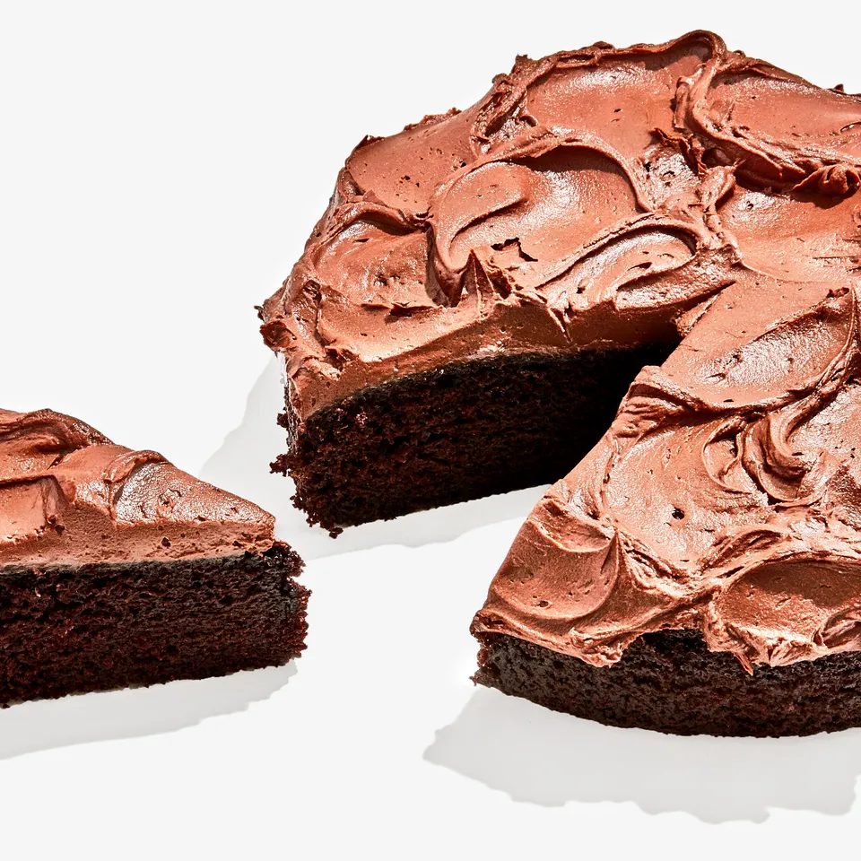

Easiest Chocolate Birthday Cake

Description: Very nice cake, highly recommended!
Ingredients
- ¾ cup vegetable oil, plus more for pan
- 1⅓ cups all-purpose flour
- 1¼ cups granulated sugar
- 1¾ tsp. baking powder
- ¼ tsp. baking soda
- 1½ tsp. kosher salt, divided
- ½ cup unsweetened cocoa powder
- 2 large eggs
- 1 cup milk
- 1¾ tsp. vanilla extract, divided
- 4 oz. semisweet chocolate chips or coarsely chopped chocolate bars (do not exceed 64% cacao)
- ½ cup heavy cream
- 4 oz. cream cheese, room temperature
- ¼ cup powdered sugar
Preparation
- Place a rack in center of oven; preheat to 325°. Using your fingertips, grease bottom and sides of a 9" round cake pan with vegetable oil. Line bottom of pan with parchment paper, smoothing to eliminate air bubbles. (It may sound fancy, but making a parchment circle is easy! Place pan on a piece of parchment, trace circumference with a pencil, then cut it out.)
- Whisk 1⅓ cups all-purpose flour, 1¼ cups granulated sugar, 1¾ tsp. baking powder, ¼ tsp. baking soda, and 1¼ tsp. kosher salt in a large bowl. Sift ½ cup cocoa powder into bowl, then whisk to combine. (You can stop here and package these dry ingredients in an airtight container to create a sort of DIY cake mix if you want!)
- Whisk 2 large eggs, ¾ cup vegetable oil, and 1 tsp. vanilla extract in a medium bowl until well combined and creamy, about 30 seconds. Using a spatula, mix egg mixture into dry ingredients until fully incorporated. It will be thick and pasty, that’s okay!
- Warm 1 cup milk in a small saucepan over medium heat until it comes to just a bare simmer—make sure it doesn’t come to a boil. Whisk warmed milk into batter until lump-free and just combined; do not overmix.
- etc.